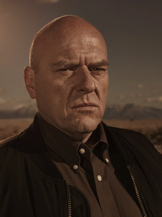
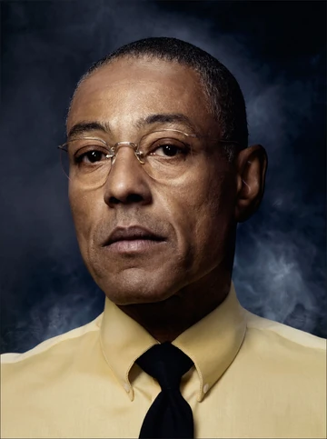
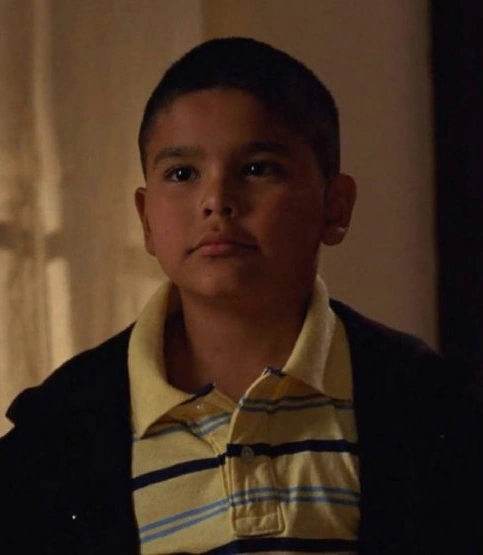
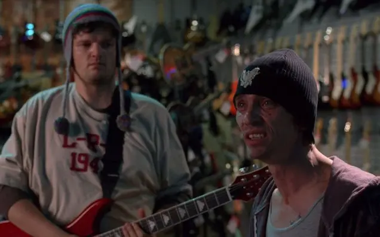

Breaking Bad
Breaking Bad é uma série que acompanha a transformação de Walter White, um professor de química que, ao ser diagnosticado com câncer, recorre à fabricação de metanfetamina para garantir o futuro de sua família, mergulhando em um mundo de dilemas morais e riscos extremos.
No meio de "Breaking Bad", a transformação de Walter White atinge um ponto de virada crucial. Já imerso no mundo do tráfico, ele abandona as últimas vestígios do professor tímido e se transforma no implacável Heisenberg, assumindo riscos cada vez maiores. Ao lado de Jesse Pinkman, Walt enfrenta ameaças oriundas de inimigos poderosos e desafios que colocam em xeque sua própria moralidade. Nessa fase, as tensões se intensificam e as escolhas obscuras demonstram que não há retorno para a vida que ele passou a abraçar, marcando uma espiral de violência, ambição e conflito ético.
No final de Breaking Bad, Walter White protagoniza sua última e decisiva reviravolta. Ele retorna a Albuquerque para acertar todas as pendências deixadas por sua trajetória criminosa, enfrentando e eliminando os neonazistas que haviam sequestrado sua fortuna e aprisionado Jesse Pinkman. Em meio a um confronto sangrento, Walter acaba sendo fatalmente ferido, e sua morte – ocorrida no próprio laboratório que testemunhou sua transformação em Heisenberg – simboliza a erradicação da persona que ele cuidadosamente construiu ao longo da série. Essa conclusão trágica sublinha, de forma poderosa, o peso das escolhas, os limites da redenção e a inevitabilidade do destino, deixando o espectador imerso numa profunda reflexão sobre a natureza da ambiguidade moral.
Personagens
Principais
Walter White (Heisenberg) – Protagonista, professor de química que se torna um produtor de metanfetamina.

Jesse Pinkman – Ex-aluno de Walter e seu parceiro no tráfico de drogas.
Skyler White – Esposa de Walter, envolvida em suas atividades criminosas.
Hank Schrader – Cunhado de Walter, agente da DEA.
Marie Schrader – Esposa de Hank e irmã de Skyler.

Saul Goodman – Advogado corrupto que ajuda Walter e Jesse.

Gustavo Fring (Gus) – Dono da Los Pollos Hermanos e chefão do tráfico.
Mike Ehrmantraut – Ex-policial e braço direito de Gus, depois trabalha com Saul e Walter.

Secundários
Tuco Salamanca – Narcotraficante violento, membro do cartel.
Hector Salamanca – Patriarca da família Salamanca (o homem da cadeira de rodas).

Todd Alquist – Criminoso associado a Walter no final da série.

Jane Margolis – Namorada de Jesse e viciada em heroína.
Gale Boetticher – Químico contratado por Gus, rival de Walter.
Lydia Rodarte-Quayle – Executiva meticulosa que trabalha com Gus e depois com Walter.

Steven Gomez (Gomie) – Parceiro de Hank na DEA.
Andrea Cantillo – Namorada de Jesse na temporada final.
Brock Cantillo – Filho de Andrea, usado como peça no jogo de Walter.
Badger e Skinny Pete – Amigos de Jesse e traficantes de baixo escalão.
Terciários:
Ted Beneke – Chefe e amante de Skyler.
Donald Margolis – Pai de Jane (piloto de aeronave).
Los Hermanos Salamanca (Leonel e Marco) – Primos assassinos do cartel.
Huell Babineaux e Patrick Kuby – Seguranças de Saul Goodman.
Francesca Liddy – Secretária de Saul.
Wendy – Prostituta que aparece em cenas com Jesse e Badger.
Jack Welker – Líder do grupo neonazista na última temporada.
Kenny – Membro do grupo de Todd e Jack.
5 episódios com as maiores notas da série (IMDB)
- Ozymandias Temporada 5, Episódio 14
- Face Off Temporada 4, Episódio 13
- Full Measure Temporada 3, Episódio 1
- Dead Freight Temporada 5, Episódio 5 — Nota 9.6/10
- Granite State Temporada 5, Episódio 15 — Nota 9.6/10
Principais troféus conquistados pela série
- Emmy Awards – Melhor Série Dramática
- Emmy Awards – Melhor Ator em Série Dramática (Bryan Cranston)
- Emmy Awards – Melhor Ator Coadjuvante (Aaron Paul)
- Emmy Awards – Melhor Atriz Coadjuvante (Anna Gunn)
- Peabody Award (2008)
Prêmios individuais
| Bryan Cranston (Walter White) | Aaron Paul (Jesse Pinckman) | Bob Odenkirk (Saul Goodman) | |
|---|---|---|---|
| 4 Emmy Awards | 2 Globo de Ouro | 3 Emmy Awards | indicado a Satellite Awards |
| 3 Screen Actors Guild Awards | 2 'Critics' Choice Television Awards | 1 'Critics' Choice Television Awards | indicado a Critics' Choice Television Awards |
| 5 Satellite Awards | Saturn Awards | 1 Screen Actors Guild Awards | 1 Screen Actors Guild Award |
Quer saber mais sobre a série de Breaking Bad?Entre aqui!!